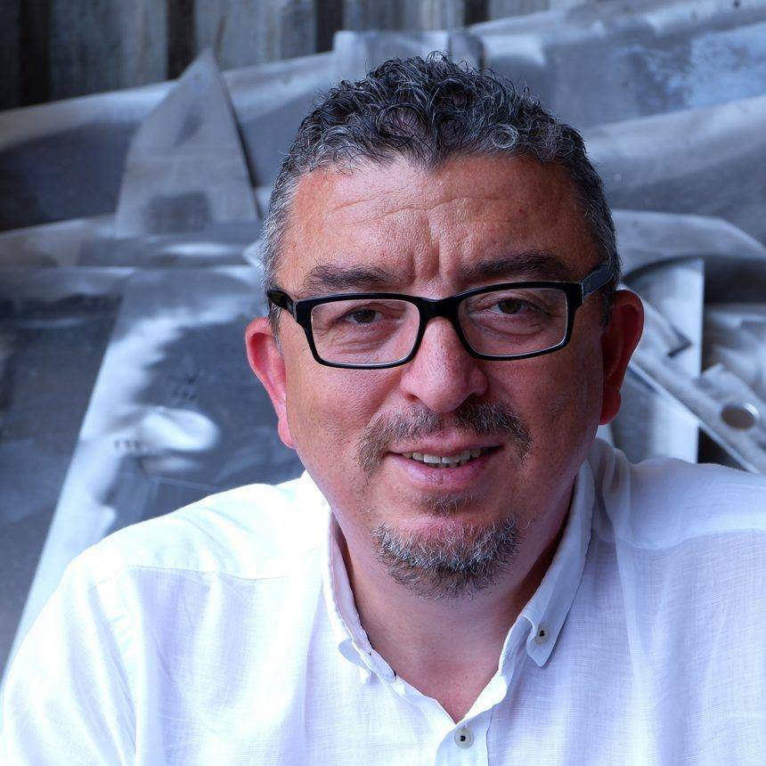

Freelancer | Python Developer | LLM GPT app | Stable Diffusion | NLP | FastApi | Flutter | AWS
I am Hakan Çetin, a seasoned freelancer specializing in Python, FastAPI, and web development. Based in Mudanya, Bursa, Turkey, I am fluent in Turkish and English, with working proficiency in Russian and French.